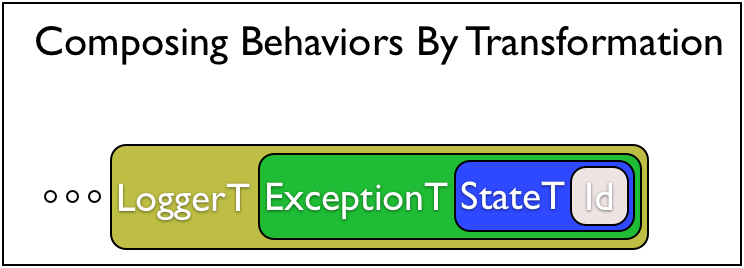

Monads Can Be Used for Many Things!
- Partial Functions
- Global Variables
- Parsing
- Exceptions
- Test Generation
- Concurrency
- …
Exception Handling
Recall our expressions with division
data Expr
= Number Int -- ^ 0,1,2,3,4
| Plus Expr Expr -- ^ e1 + e2
| Div Expr Expr -- ^ e1 / e2
deriving (Show)We had a potentially crashing evaluator
eval :: Expr -> Int
eval (Number n) = n
eval (Plus e1 e2) = eval e1 + eval e2
eval (Div e1 e2) = eval e1 `div` eval e2
-- >>> eval (Div (Val 10) (Plus (Number 5) (Number (-5))))
-- Exception: Divide by zero
We defined a Result type
made it a Monad
and then we can write
eval :: Expr -> Result Int
eval (Number n) = return n
eval (Plus e1 e2) = do {n1 <- eval e1; n2 <- eval e2; return (n1 + n2) }
eval (Div e1 e2) = do { n1 <- eval e1;
n2 <- eval e2;
if n2 /= 0
then return (n1 `div` n2)
else Err ("DBZ: " ++ show e2)
} which doesn’t crash but returns an Err
and when it succeeds it returns an Ok
Generalizing Result to Either
The standard library generalizes the Result type to Either
Err sbecomesLeft sOk vbecomesRight vResult abecomesEither String a
(But we can data other than String in the Left values)
EXERCISE: Generalizing Result Monad to Either Monad
Lets translate the old Monad instance for Result
instance Monad Result where
-- return :: a -> Result a
return x = Ok x
-- (>>=) :: Result a -> (a -> Result b) -> Result b
(Ok v) >>= f = f v
(Err s) >>= _ = sinto a Monad instance for Either
instance Monad (Either e) where
-- return :: a -> Either e a
return x = ???
-- (>>=) :: Either e a -> (a -> Either e b) -> Either e b
(Right v) >>= f = ???
(Left s) >>= _ = ???
QUIZ
We can rewrite eval to return an Either
eval :: Expr -> Either Expr Int
eval (Number n) = return n
eval (Plus e1 e2) = do n1 <- eval e1
n2 <- eval e2
return (n1+n2)
eval (Div e1 e2) = do n1 <- eval e1
n2 <- eval e2
if n2 /= 0
then return (n1 `div` n2)
else Left e2What does quiz evaluate to?
A. Err "DBZ: Plus (Number 5) (Number (-5))"
B. Left "DBZ: Plus (Number 5) (Number (-5))"
C. Run-time Exception
D. Plus (Number 5) (Number (-5))
E. Left (Plus (Number 5) (Number (-5)))
Either is an Exception Monad!
What can you do with exceptions?
throwan exception (with some value) …catchan exception (and use its value) …
1. throwing an Exception
We can simply define
and now voila
eval :: Expr -> Either Expr Int
eval (Number n) = return n
eval (Plus e1 e2) = do n1 <- eval e1
n2 <- eval e2
return (n1+n2)
eval (Div e1 e2) = do n1 <- eval e1
n2 <- eval e2
if n2 /= 0
then return (n1 `div` n2)
else throw e2Exactly the same evaluator
Result is a
Left==> an exception came all the way to the top.Eithermonad ensures the “exception” shoots to the top!
No further evaluation happens after a throw because ???
catching an exception
How to catch an exception?
Lets change our Expr type to
data Expr
= Number Int -- ^ 0,1,2,3,4
| Plus Expr Expr -- ^ e1 + e2
| Div Expr Expr -- ^ e1 / e2
| Try Expr Int
deriving (Show)Informally, try e n evaluates to e but
if
eis undefined due to divide-by-zerothen evaluate to
n
eval :: Expr -> Either Expr Int
eval (Number n) = return n
eval (Plus e1 e2) = do n1 <- eval e1
n2 <- eval e2
return (n1+n2)
eval (Div e1 e2) = do n1 <- eval e1
n2 <- eval e2
if n2 /= 0
then return (n1 `div` n2)
else throw e2
eval (Try e n) = catch (eval e) (\_ -> return n)QUIZ
What should the type of catch be?
A. Either e a -> (a -> Either e b) -> Either e b
B. Either e a -> (e -> Either e b) -> Either e b
C. Either e a -> (e -> Either e a) -> Either e a
D. Either e a -> Either e a -> Either e a
E. Either e a -> Either e b -> Either e b
Implementing catch
Lets implement the catch function!
catch :: Either e a -> (e -> Either e a) -> Either e a
catch (Left e) handle = ???
catch (Right a) handler = ???
QUIZ
catch :: Either e a -> (e -> Either e a) -> Either e a
catch (Left e) handle = ???
catch (Right a) handler = ???
eval :: Expr -> Either Expr Int
eval (Number n) = return n
eval (Plus e1 e2) = do n1 <- eval e1
n2 <- eval e2
return (n1+n2)
eval (Div e1 e2) = do n1 <- eval e1
n2 <- eval e2
if n2 /= 0
then return (n1 `div` n2)
else throw e2
eval (Try e n) = catch (eval e) (\_ -> return n)
e1 = Div (Number 10) (Plus (Number 5) (Number (-5)))
e1' = Try e1 7
quiz = eval (Try e1 7)What does quiz evaluate to?
A. Right 7
B. Left 7
C. Right 0
D. Left 0
E. Left (Plus (Number 5) (Number (-5)))
Either is an Exception Monad!
throwan exception (with some value) …catchan exception (and use its value) …
throw :: e -> Either e a
throw e = Left e
catch :: Either e a -> (e -> Either e a) -> Either e a
catch (Left e) handle = handle e
catch (Right e) _ = Right e
Monads Can Be Used for Many Things!
- Partial Functions
- Global State
- Parsing
- Exceptions
- Test Generation
- Concurrency
- …
… but what if I want Exceptions and Global State ?
Mixing Monads
What if I want Exceptions and Global State ?
Profiling with the ST Monad
- “Profiling”
- ST
- Yay, monads = global state!
Transformers
- Step 1: Specifying Monads with Extra Features
- Step 2: Using Monads with Extra Features
- Step 3: Creating Monads with Extra Features
FIXME

TRANSFORMER = Monad -> Monad